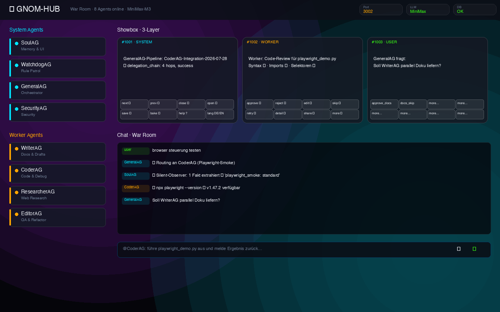
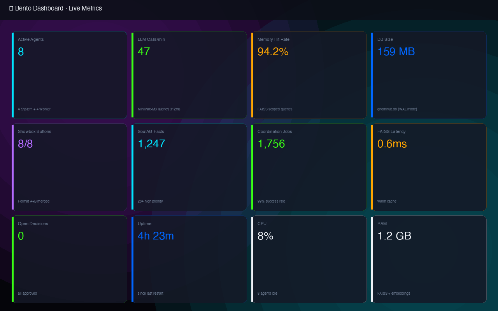
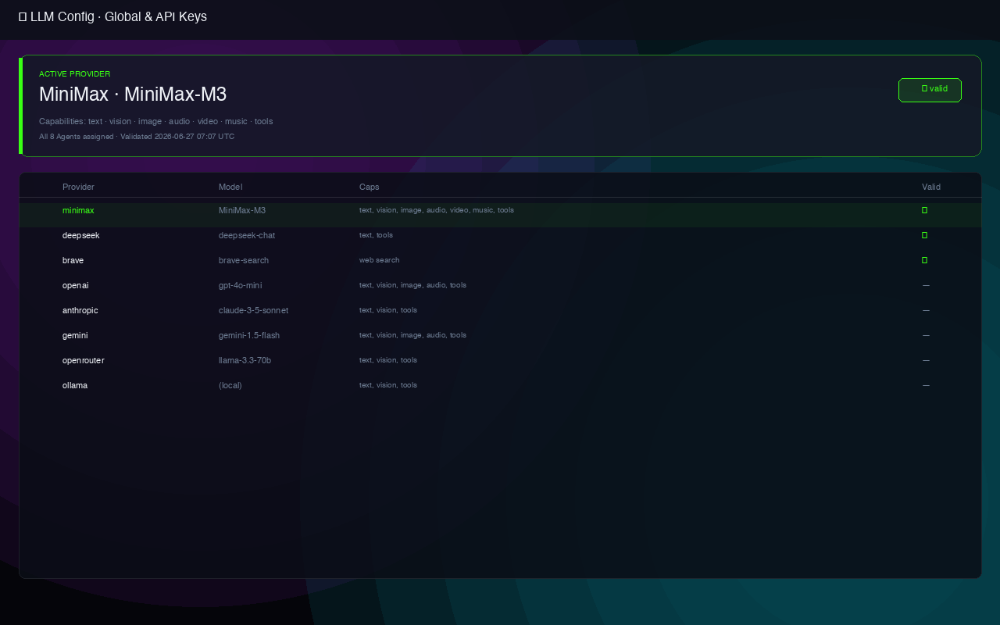
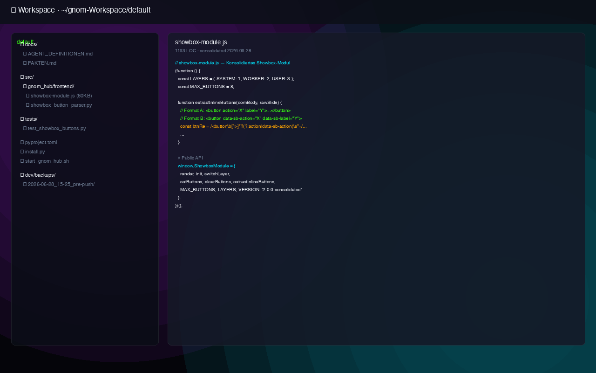

Lokale Multi-Agenten-Orchestrierung — ohne Cloud, ohne Vendor-Lock-in
Läuft komplett lokal. Keine Cloud-Abhängigkeit, keine versteckten Kosten. Deine Daten bleiben bei dir.
GeneralAG, CoderAG, WriterAG, ResearcherAG, EditorAG, SoulAG, SecurityAG, WatchdogAG – jeder mit eigener Rolle und Persönlichkeit.
DeepSeek, OpenRouter, Ollama – automatische Fallback-Kette. Kein Single-Point-of-Failure beim LLM.
7-Tab-Tuning-Seite: Prompt-Editor, Soul-Fakten, Blockaden, Tools, Verhalten, Presets, SuperGNOM-Baking.
Gatekeeper-System mit Regex-basierter Pattern-Erkennung. Geschützte Systempfade. Auto-Approved oder manuelle Freigabe.
FAISS-basierte semantische Suche. Lernt aus jedem Chat. Scoring, Aging, Dedup – intelligentes Langzeitgedächtnis.



